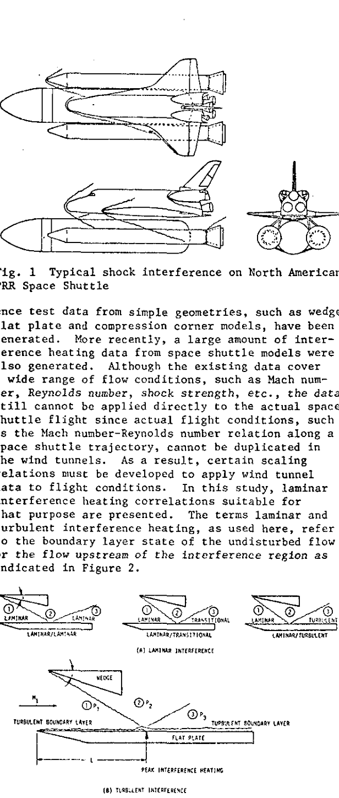
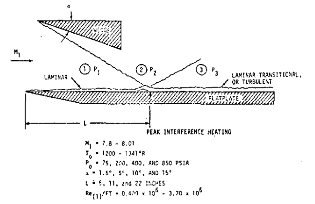
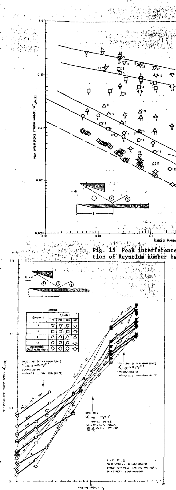
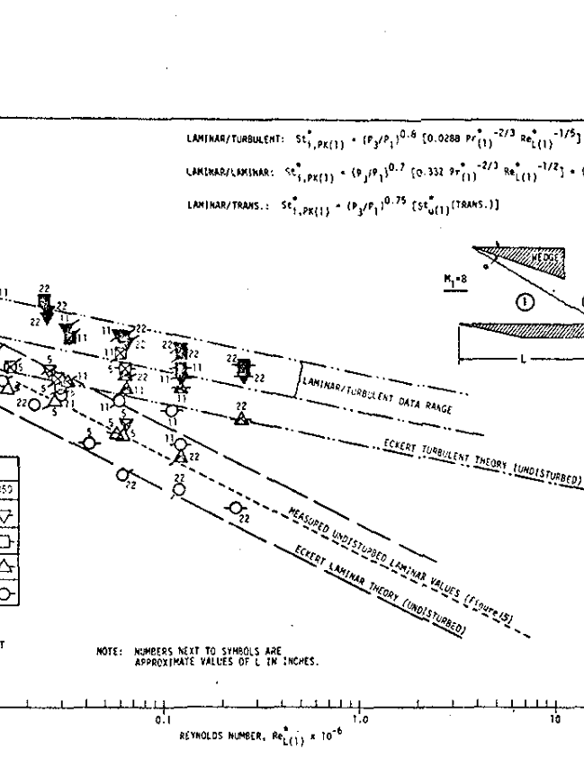

01中文摘要
本文基于楔/平板模型新实验数据，建立层流干扰加热关联式，覆盖较宽雷诺数和激波强度范围。作者采用 Eckert 参考温度法，发展两种关联途径：第一种用干扰区上游的激波强度、雷诺数、Prandtl 数等关联峰值干扰 Stanton 数；第二种用下游条件关联峰值 Stanton 数。实验表明，雷诺数和激波强度较低时边界层保持层流，二者增大时转为转捩或湍流；峰值干扰加热可按未受干扰的 Eckert 层流/湍流理论同样方式关联，具体取决于干扰区及其下游的边界层状态。关联式可用于超声速/高超声速飞行器干扰加热预测。
原始摘要（英文/原文）
Laminar i n t e r f e r e n c e heating c o r r e l a t i o n s have been developed based on recent experimental data obtained w i t h w e d g e l f h t p l a t e models f o r wide ranges of Reynolds number and shock s t r e n g t h. Two c o r r e l a t i o n techniques were developed using t h e Eckert r e f c r c n c e method. The peak i n t e r f e r e n c e S t a n t o n number was f i r s t c o r r e l a t e d w i t h shock s t r e n g t h, Reynolds number, and P r a n d t l number based on flow conditions upstream of t h e i n t e r f e r e n c e r e g i o n. The second a p p r o a c h was made by c o r r e l a t i n g pcak i n t e r f e r e n c e S t a n t o n number w i t h o n l y Reynolds number and P r a n d t l number based on downstream flow c o n d i t i o n s. The laminar boundary l a y e r remains laminar when b o t h Reynolds number and shock s t r e n g t h are l o w bot becomes t r a n s i t i o n a l o r t u r b u l e n t when Reynolds number u r l a n d shock s t r e n g t h a r e i n c r e a s e d. The s t u d y results show t h a t peak i n t e r f e r e m e heating can be correlated w i t h Reynolds number and P r a n d t l number i n e x a c t l y t h e Same manner u s t h e undisturbed Eckert laminar and turbulent theories, depending an the s t a t e of t h e boundary layer i n (and downstream o f) the i n t e r f e r e n c e region. The c o r r e l a t i o n s developed in t h i s s t u d y can be a p p l i e d t o s u p e r s o n i c 1 hypersonic aircraft interference heating prediction.
02阅读说明
会议论文（1973年），共11页；材料为 OCR 全文、13 幅抓图与图注。表1-2、图3-17可读，但正文双栏 OCR 字形错误多、部分公式残缺。式(2)-(15)已对照原 PDF 第4-9页图像核对（共6页，未超限），式(1)由正文定义与图3-7中的关联式校核；图14小字与少数符号仍受扫描限制，已在相应位置注明。 文章类型：会议
03一句话核心与三句话摘要
以Eckert参考温度法将峰值干扰Stanton数写成激波强度幂律与未干扰热流之积，建立分层流状态的关联。
- 文章利用 Haslett 等人在 AEDC Von Karman 设备 B 风洞 Mach 8 下获得的二维楔/平板干扰加热数据，发展层流干扰加热关联式。 原文明确
- 作者先按边界层状态把数据分为层流/层流、层流/转捩、层流/湍流三类，再把激波强度效应 (P3/P1)^n 与 Reynolds、Prandtl 数效应分离。 AI概括
- 最终给出以上游流动条件为基础（式10-12）和以下游流动条件为基础（式13-15）的两套关联，后者在 Eckert 未干扰值前分别乘 2.2、2.8、2.5。 原文明确
04核心内容清单
| 要点 | 类型 | 重要性 | 原文依据 | 属性 |
|---|---|---|---|---|
| 发展了两套基于 Eckert 参考温度法的层流干扰加热关联：Method I 用上游场(1)条件，Method II 用下游场(3)条件。 | 方法 | A | PDF 第6页（印刷页5），III. Theory；PDF 第8页（印刷页7） | 原文明确 |
| 湍流干扰关联中加热因子随激波强度单调变化，指数 n 仅 0.71-0.85。 | 数据/关联 | A | PDF 第3-4页（印刷页2-3），表1 | 原文明确 |
| 层流干扰关联的 n 在 0.70-1.30 间大幅分散，主要原因是各作者未正确考虑边界层转捩。 | 数据/评述 | A | PDF 第4页（印刷页3），表2 | 原文明确 |
| 试验矩阵为 M1=7.8-8.01、T0=720-1570 °R、P0=75/200/400/850 psia、楔角 1.5°/5°/10°/15°、L=5/11/22 in，模型为二维楔/平板。 | 实验条件 | A | 图14，PDF 第7页（印刷页6） | 原文明确 |
| 扣除转捩效应后，激波强度指数取 n=0.7（层流/层流）与 n=0.8（层流/湍流），层流/转捩取 0.75。 | 关联 | A | 式(9)-(12)，PDF 第6-7页（印刷页5-6）；图16 | 原文明确 |
| Method I 最终关联把 (P3/P1)^n 乘在 Eckert 未干扰层流或湍流 Stanton 数前，见式(10)-(12)。 | 关联 | A | 式(10)-(12)，PDF 第7页（印刷页6）；图17 | 原文明确 |
| Method II 以下游场(3)的 Re*、Pr* 关联峰值热流，并在层流、湍流、转捩三种情形分别乘 2.2、2.8、2.5。 | 关联 | A | 式(13)-(15)，PDF 第8页（印刷页7）；图18 | 原文明确 |
| 激波干扰下边界层转捩发生在 Re_L=0.1×10^6-1.0×10^6。 | 数据 | A | PDF 第8页（印刷页7），图16 | 原文明确 |
| Method II 常数 2.2/2.8 大于 1，作者解释为再附点附近边界层减薄、高峰值干扰压力及未解析的黏性-无黏干扰效应。 | 机制解释 | B | PDF 第8页（印刷页7） | 原文明确 |
| 峰值干扰热流可高 1-2 个数量级，主因是入射/反射激波压缩与边界层由层流转为转捩/湍流。 | 结论 | A | PDF 第2页（印刷页1）；PDF 第8页（印刷页7） | 原文明确 |
| 两套关联都是 Mach 8 楔/平板数据的经验拟合，向其他 Mach 数、Re 数或飞行条件外推尚未验证。 | 局限 | C | 综合 PDF 第6-8页；文中未给出外推验证 | AI推断 |
05引言：研究问题与领域缺口
高超声速飞行器激波-边界层干扰区的热流可比未干扰区高 1-2 个数量级（PDF 第2页，印刷页1）。当时层流干扰加热的解析预测方法很有限，风洞数据又难以直接外推到飞行条件，因此需要可缩放的工程关联。已有湍流关联一致性较好，n=0.71-0.85；层流关联的 n 却在 0.70-1.30 间大幅分散，作者把主因归结为未正确考虑边界层转捩（PDF 第4页，表1、表2）。本文目标是利用 Haslett 等新获得的 Mach 8 二维楔/平板数据（PDF 第6页），建立按层流/层流、层流/转捩、层流/湍流状态区分的峰值干扰热流关联。
06流动条件与几何构型
| 项目 | 数值/描述 | 依据 | 备注 |
|---|---|---|---|
| 试验设备 | AEDC Von Karman Gas Dynamics Facility，Hypersonic Wind Tunnel B（Mach 8） | PDF 第6页（印刷页5） | 原文称 Mach 8 test data were conducted in Hypersonic Wind Tunnel B |
| 来流 Mach 数 M1 | 7.8-8.01 | 图14，PDF 第7页（印刷页6） | |
| 总温 T0 | 720-1570 °R | 图14，PDF 第7页（印刷页6） | |
| 总压 P0 | 75、200、400、850 psia | 图14，PDF 第7页（印刷页6） | |
| 楔角 α | 1.5°、5°、10°、15° | 图14，PDF 第7页（印刷页6） | 原文用 α 表示 wedge angle |
| 激波入射位置 L（平板前缘至峰值干扰点的距离） | 5 in、11 in、22 in | 图14，PDF 第7页（印刷页6） | |
| 单位雷诺数 Re1 | 约 0.53×10^4-4.70×10^4 | 图14，PDF 第7页（印刷页6） | 图中小字给出的参考长度单位受限于扫描，无法确认是每厘米还是每英寸 |
| 模型与数据范围 | 二维楔/平板模型；仅采用层流数据，按上游/下游状态覆盖层流/层流、层流/转捩、层流/湍流 | PDF 第6页（印刷页5） | |
| 边界层状态判定 | 逐点把实测未干扰与干扰 Stanton 数同 Eckert 层流/湍流理论比较，确定上游与下游状态 | PDF 第6-7页（印刷页5-6），图15 |
07核心现象与关键参数
| 参数 | 定义 | 数值 | 关系/说明 | 依据 |
|---|---|---|---|---|
| St*_(1,PK) | 以场(1)（入射激波上游）物性和 Eckert 参考温度计算的峰值干扰 Stanton 数 | 最终关联式(9)-(12)的被关联量 | St*_(1,PK) = (P3/P1)^n · St*_u(1) | PDF 第6-7页（印刷页5-6），式(9)-(12) |
| P3/P1 | 入射激波与反射激波后的理论无粘压力比，作为激波强度参数 | 在式(8)中 0.7≤n≤1.9；扣除转捩影响后层流/层流取 0.7，层流/湍流取 0.8 | St*_(1,PK) ∝ (P3/P1)^n | PDF 第6页（印刷页5），式(8)-(9)；图2 |
| h_(i,PK)/h_u | 峰值干扰对流换热系数与同一位置未干扰值之比（加热因子） | 湍流关联 n=0.71-0.85；层流关联 n=0.70-1.30 | h_(i,PK)/h_u = C (P_(i,PK)/P_u)^n | PDF 第2-4页（印刷页1-3），式(1)、表1、表2 |
| Re*_L | 以参考温度下物性、平板前缘至峰值干扰点距离 L 定义的 Reynolds 数 | 层流幂次 -1/2；湍流幂次 -1/5 | St*_u = A (Re*_L)^a (Pr*)^b | PDF 第5页（印刷页4），式(3)；PDF 第7-8页，式(10)-(14) |
| Pr* | 参考温度下的 Prandtl 数 | 层流、湍流均以 Pr*^(-2/3) 出现 | 见式(10)-(14) | PDF 第7-8页（印刷页6-7） |
| T*/Te | Eckert 参考温度与边界层边缘温度之比 | 1 + 0.5(Tw/Te-1) + 0.22(Tr/Te-1) | 式(4) | PDF 第5页（印刷页4），式(4) |
| Tr/Te | 恢复温度与边界层边缘温度之比 | 1 + r(γ-1)/2·Me^2 | 式(5)；r 为恢复因子 | PDF 第5页（印刷页4），式(5) |
| A | Eckert 未干扰 Stanton 数关联的系数 | 层流 0.332；湍流 0.0288 | 式(10)、(11) | PDF 第7页（印刷页6） |
| Method II 经验常数 | 下游场(3)关联在 Eckert 未干扰值前的乘数 | 层流/层流 2.2；层流/湍流 2.8；层流/转捩 2.5 | 式(13)-(15)；2.5 为 2.2 与 2.8 的平均 | PDF 第8页（印刷页7） |
| 转捩 Reynolds 数范围 | 激波干扰下边界层发生转捩的 Re_L 区间 | 0.1×10^6-1.0×10^6 | 由图16的跨状态斜率变化判断 | PDF 第8页（印刷页7），图16 |
| 峰值热流增益 | 干扰峰值热流（或换热系数）与未干扰值之比 | 高 1-2 个数量级 | 由激波压缩与转捩共同造成 | PDF 第2页（印刷页1）；PDF 第8页（印刷页7） |
08方法与数据
数据来自 AEDC Von Karman 设备 B 风洞的 Mach 8 试验，模型为二维楔/平板，仅使用层流数据；测试矩阵覆盖 M1=7.8-8.01、T0=720-1570 °R、P0=75/200/400/850 psia、楔角 1.5°/5°/10°/15°、激波入射位置 L=5/11/22 in（PDF 第6-7页，图14）。作者先用理论无粘 P3/P1 与实测峰值压力比对照（图12、13），确认压比可作激波强度参数；再用实测 Stanton 数与 Eckert 层流/湍流理论线比较，判定每个数据点的上游与下游边界层状态（图15）。随后发展两套关联：Method I 以上游场(1)的 Re*、Pr* 与 P3/P1 关联（式6、9-12）；Method II 把全部物性改用下游场(3)条件，只用 Re*_(3)、Pr*_3 关联，并在 Eckert 未干扰值前乘经验常数（式7、13-15）。拟合在双对数坐标上按常数 Re 线取斜率；文中未说明最小二乘方法或数据点数量。
| 项目 | 内容 | 依据 | 备注 |
|---|---|---|---|
| 数据来源 | Haslett 等（1972）在 AEDC Mach 8 风洞用二维楔/平板模型测得的干扰加热数据 | PDF 第6页（印刷页5） | 仅使用层流数据 |
| 压力比校核 | 把理论无粘 P3/P1 与实测峰值干扰压比 Pi,PK/Pu 对比：层流见图12，湍流见图13 | PDF 第3页（印刷页2） | 实测与计算总体符合，湍流更好；个别层流点偏高归因于附加激波入射 |
| 边界层状态判定 | 把实测未干扰与干扰 Stanton 数同 Eckert 层流、湍流理论线比较，逐点判定上游/下游状态 | PDF 第6-7页（印刷页5-6），图15 | 1.5° 楔保持层流；5°/10° 楔出现转捩；15° 楔完全湍流 |
| Method I（上游条件关联） | 分离出 (P3/P1)^n，用上游场(1)的 Re*、Pr* 关联；同一状态数据用于定 n | PDF 第6-7页（印刷页5-6），式(6)、(9)-(12) | |
| Method II（下游条件关联） | 全部物性改用下游场(3)条件计算 Stanton、Reynolds、Prandtl 数，只与 Re*_(3)、Pr*_3 关联，并乘经验常数 | PDF 第6页、第8页（印刷页5、7），式(7)、(13)-(15) | |
| 拟合方式 | 在双对数坐标上按常数 Reynolds 数连线读取斜率，按边界层状态取最小斜率线定 n | PDF 第6-7页（印刷页5-6），图16 | 文中未给出最小二乘、相关系数或数据点数量 |
| 验证方式 | 把扣除激波强度后的数据与 Eckert 未干扰层流/湍流理论线对比（图17）；把 Method II 结果与下游 Eckert 理论线对比（图18） | PDF 第7-8页（印刷页6-7） | 未给出定量误差 |
09核心推导与公式
以 Eckert 参考温度法把可压缩边界层热流写成 St* = A(Re*)^a(Pr*)^b，再把激波强度因子从 Reynolds、Prandtl 数因子中分离，得到 St*_(1,PK) = (P3/P1)^n 乘未干扰 Eckert 值；分别用上游场(1)与下游场(3)的物性建立两套关联。
关键假设
- 峰值干扰热流可用局部的无量纲参数关联，且同一类别内 n 与 Reynolds 数无关（PDF 第6页）。
- Eckert 参考温度法可把温度-马赫数耦合并入物性，式(3)在无激波时可压缩数据成立（PDF 第5页）。
- 边界层状态（层流/转捩/湍流）可由实测 Stanton 数与 Eckert 层流/湍流理论线的比较判定（PDF 第6-7页）。
- 数据为二维楔/平板模型、上游层流；峰值点局部值代表干扰区最高热流（PDF 第6页）。
- Method II 假定上游压缩效应已包含在下游场(3)的 Re*、Pr* 中（PDF 第6页）。
推导过程
把峰值干扰换热系数与同位置未干扰值之比写成激波强度比的幂律，C、n 为常数。作者指出该式隐含假设干扰热流只随激波强度变化，或随 Re 的变化与未干扰情形相同，因此对层流干扰未必合理（PDF 第2-4页）。
峰值干扰 Stanton 数应依赖激波强度、Reynolds 数、Prandtl 数、Mach 数与壁温比，先写成一般函数（式2），再设法把激波强度因子分离出来。
未干扰可压缩热流满足式(3)，其中物性均在参考温度 T* 下计算；T* 由式(4)给出，恢复温度由式(5)给出。这样温度-马赫数耦合被并入物性，有利于把激波强度效应单独分离。
假定式(2)可分离为激波强度、Reynolds 数与 Prandtl 数三个因子的乘积，得到式(6)。这样可用同一边界层状态、同一 Re 线上的数据单独定出激波强度幂指数。
Method II 认为峰值位于下游场(3)，上游压缩效应已隐含在下游 Re*、Pr* 中，因此直接写成式(7)，不再显含 P3/P1。
由图16中两端点同状态、斜率最小的连线拟合激波强度幂律，得式(8)的 0.7≤n≤1.9。扣除转捩影响后取 n=0.7（层流/层流）与 n=0.8（层流/湍流），层流/转捩取二者平均 0.75，得式(9)。
把 Eckert 未干扰层流、湍流关联（系数 0.332 与 0.0288，Re 幂次 -1/2 与 -1/5，Pr 幂次 -2/3）代入式(9)，得到式(10)-(12)。层流/转捩没有独立理论式，用式(12)以 0.75 次幂衔接。
把同一 Eckert 形式用于下游场(3)，再按状态分别乘 2.2、2.8、2.5，得式(13)-(15)。三个常数由数据拟合，2.5 为前两者的算术平均；作者把大于 1 的倍数归因于再附区边界层减薄、高峰值压力与未解析的黏性-无黏干扰。
适用边界：仅适用于 Mach 8、二维楔/平板、上游层流的数据范围；n=0.7/0.8 与常数 2.2/2.8/2.5 均为经验拟合，不是理论导出；层流/转捩的 0.75 与 2.5 只是平均值。Method II 的常数吸收了再附区边界层减薄、高峰值压力等未解析效应，因此不能据此外推到其他 Mach 数、Re 数或三维构型。文中未给出拟合误差、数据点数和外推验证。
10结果：主要发现与关键证据
湍流数据（表1）的加热因子随 P3/P1 或 Pi,PK/Pu 单调变化，n 仅 0.71-0.85；层流数据（表2）n 为 0.70-1.30 且点据分散（PDF 第3-4页）。按边界层状态分类后，图16显示两端点同状态的连线斜率最小（n≈0.7 或 0.8），跨状态连线斜率更大；据此取 n=0.7（层流/层流）与 n=0.8（层流/湍流），并取 0.75 作层流/转捩的平均值（式9、12；PDF 第6-7页）。扣除激波强度效应后，层流/层流数据与 Eckert 层流理论平行、层流/湍流数据与 Eckert 湍流理论平行（图17）。Method I 最终关联为式(10)-(12)；Method II 以下游场条件关联时，层流/层流、层流/湍流、层流/转捩分别需乘 2.2、2.8、2.5（式13-15；图18，PDF 第7-8页）。激波干扰下转捩发生在 Re_L=0.1×10^6-1.0×10^6（PDF 第8页，图16）。
| 发现 | 证据 | 证据类型 | 强度 | 位置 | 属性 |
|---|---|---|---|---|---|
| 湍流干扰加热关联一致性较好，加热因子随激波强度单调变化，n 仅为 0.71-0.85。 | 表1汇总 8 组湍流关联，n=0.71-0.85；图3、图4给出典型直线关联。 | 数据/关联 | 强 | PDF 第3-4页（印刷页2-3），表1、图3、图4 | 原文明确 |
| 层流干扰关联的 n 在 0.70-1.30 间分散，点据明显比湍流差。 | 表2汇总的层流关联 n 从 0.80 到 1.29；图5-11 数据带较宽。 | 数据/评述 | 强 | PDF 第4页（印刷页3），表2、图5-11 | 原文明确 |
| 按边界层状态分类后，激波强度指数可稳定为 0.7（层流/层流）与 0.8（层流/湍流）。 | 图16中两端点同状态的实线斜率最小（约0.7或0.8），跨状态虚线斜率更大；式(9)据此给出 n 值。 | 关联 | 强 | PDF 第6-7页（印刷页5-6），图16、式(9) | 原文明确 |
| 扣除激波强度效应后，层流/层流数据与 Eckert 层流理论平行，层流/湍流数据与 Eckert 湍流理论平行。 | 图17中两类数据分别落在 Eckert 层流、湍流理论线附近，层流/转捩数据位于两线之间。 | 验证 | 强 | PDF 第7页（印刷页6），图17 | 原文明确 |
| Method II 用下游场(3)条件关联时，层流、湍流、转捩分别需乘 2.2、2.8、2.5。 | 式(13)-(15)及图18：三种状态的数据线与下游 Eckert 理论线平行，但整体抬高。 | 关联 | 强 | PDF 第8页（印刷页7），式(13)-(15)、图18 | 原文明确 |
| 激波干扰下边界层转捩发生在 Re_L=0.1×10^6-1.0×10^6。 | 图16中数据线由同状态斜率转为跨状态斜率的 Re 区间。 | 数据 | 中 | PDF 第8页（印刷页7），图16 | 原文明确 |
| 峰值干扰热流可比未干扰值高 1-2 个数量级。 | 摘要与结论均给出该量级；作者归因于入射/反射激波压缩加上边界层转捩。 | 结论 | 强 | PDF 第2页（印刷页1）；PDF 第8页（印刷页7） | 原文明确 |
| 2.2/2.8 的常数大于 1，说明下游 Eckert 理论本身低估了干扰区峰值热流。 | 作者把差额归因于再附点附近边界层减薄、高峰值干扰压力及复杂黏性-无黏干扰。 | 机制解释 | 中 | PDF 第8页（印刷页7） | 原文明确 |
| 实测峰值干扰压力比与理论无粘压比总体符合，湍流情形优于层流。 | 图12（层流）与图13（湍流）中多数点落在 45° 线附近；个别层流点偏高归因于附加激波入射。 | 验证 | 中 | PDF 第3页（印刷页2），图12、图13 | 原文明确 |
11机制解释与论证链
入射斜激波与平板边界层相交并反射，使干扰区下游压力升至 P3。压力升高压缩边界层、减薄位移厚度，并可能触发转捩。峰值热流由两部分共同决定：激波压缩（以 P3/P1 表征）提高当地密度与温度梯度；边界层状态决定热流随 Re 的缩放律（层流 -1/2、湍流 -1/5）。因此层流/层流数据取 n≈0.7，层流/湍流因下游热流水平整体抬高取 n≈0.8；Method II 则把所有效应折算到下游场(3)的 Eckert 未干扰值上，用大于 1 的倍数表示再附点附近的额外增强。
12讨论：结论、贡献与局限
机制上，入射与反射激波造成的压力升高压缩边界层、减薄其厚度，直接提高壁面热流；若激波同时触发转捩，下游湍流边界层又使峰值热流再升一级，因此层流干扰必须把激波强度效应与转捩效应分开处理（PDF 第6-7页）。Method II 的常数 2.2/2.8 大于 1，作者归因于再附点附近边界层减薄、高峰值干扰压力以及尚未解决的复杂黏性-无黏干扰（PDF 第8页）。层流/转捩取 2.5 只是 2.2 与 2.8 的算术平均，缺少独立依据。局限包括：仅 Mach 8、二维楔/平板、上游层流；n 与常数均为经验拟合；未给出误差统计；转捩判定依赖与理论线的目视比较。
作者结论
改进的层流干扰加热关联已建立。Re 与激波强度都低时，边界层在激波入射后仍保持层流；Re 或激波强度增加后，边界层转为转捩或湍流。峰值干扰热流可按干扰区及下游边界层状态，用与 Eckert 未干扰层流/湍流理论完全相同的形式关联：Method I 以上游场(1)条件给出式(10)-(12)，Method II 以下游场(3)条件给出式(13)-(15)。层流峰值干扰热流可比未干扰值高 1-2 个数量级，主要来自入射/反射激波压缩和边界层由层流转为转捩/湍流（PDF 第8页，印刷页7）。
局限与未解决问题
关联建立在单一 Mach 8 风洞、二维楔/平板、上游层流的数据上；n=0.7/0.8 与常数 2.2/2.8/2.5 均为经验拟合；层流/转捩的 0.75 与 2.5 只是平均值。Method II 的常数吸收了再附区边界层减薄、高峰值压力等未解析效应。文中未给出拟合误差、数据点数和外推到其他 Mach/Re 的验证；转捩判定依赖与 Eckert 理论线的目视比较，带主观性；图14 单位雷诺数的参考长度单位受扫描限制。
13对高速流动与工程的意义
为超/高超声速飞行器热防护设计提供了可按边界层状态直接选用的层流干扰峰值热流工程关联，并明确指出把转捩效应从激波强度效应中分离，是改善层流干扰关联分散的关键。该思路对后续干扰加热数据库与预测方法的构建有直接影响。
14核心图件




15可引用原文素材
| 原文短句 | 可支持的观点 | 位置 | 使用建议 |
|---|---|---|---|
| “one or two orders of magnitude” | 干扰加热的严重程度 | PDF 第2页（印刷页1） | 说明研究动机与工程意义 |
| “n varies only from 0.71 to 0.85” | 湍流关联一致性好 | PDF 第4页（印刷页3） | 对比层流关联的分散 |
| “0.70 to 1.30” | 层流关联 n 的变化范围 | PDF 第4页（印刷页3） | 指出已有层流关联的不足 |
| “boundary layer transition” | 层流关联分散的主因 | PDF 第4页（印刷页3） | 本文分类关联的核心依据 |
| “peak interference heating” | 研究对象 | PDF 第2页（印刷页1） | 界定被关联量 |
| “laminar/laminar case” | n=0.7 的适用状态 | PDF 第6页（印刷页5） | 式(9)的状态分类 |
| “0.1-1.0 million” | 转捩 Reynolds 数范围 | PDF 第8页（印刷页7） | 给出干扰诱导转捩的定量区间 |
16最终核验
| 核验项 | 结论 |
|---|---|
| 仅基于全文 | 仅使用 F:\文献工具\build\deep_input\476.md 的 OCR 全文、图注与抓图清单，并对照原 PDF 第4-9页图像核对公式；未引入外部文献结论。 |
| A 级要点有依据 | 所有 A 级要点均给出印刷页/PDF页、表号、图号或式号：表1-2（PDF 第3-4页）、图14（PDF 第7页）、式(8)-(15)（PDF 第6-8页）、图16-17（PDF 第8-9页）。 |
| 属性标注 | three_sentence、core_points、findings 均逐条标注【原文明确】【AI概括】【AI推断】；推导与条件表为原文整理，未混入外部知识。 |
| 覆盖范围 | 覆盖摘要、引言、已有关联综述（表1-2）、两种理论方法、结果、结论及图14-17；未逐条抄录参考文献。 |
| 无编造 | 未编造页码、图号、公式或数据；OCR 残缺处（如图14单位雷诺数参考长度）已明确写为受限于材料、无法确认。 |
需回原文确认
- 图14中 Re1 的参考长度单位（每厘米或每英寸）扫描不清，需查原文或原始数据表确认。
- 层流/转捩的 n=0.75 与 Method II 的 2.5 仅由两端值平均得到，缺乏独立数据验证。
- 两套关联的相对误差、散度与数据点数量文中均未给出，需与 Haslett 等原始报告核对。
- Method II 常数 2.2/2.8/2.5 是否随 Mach 数、楔角或 Re 变化，文中未讨论。
- 转捩判据依赖与 Eckert 理论线的目视比较，其不确定度未量化。
- 数据是否包含局部分离工况，文中未明确说明。
17关联文献
依据标签、板块、构型与作者脉络自动关联，可据此追踪同一问题的前序与后续工作。
18引用格式
选择期刊风格后复制；出处保留原刊名。BibTeX 可直接用于 LaTeX。
引用格式
Hung, F. 1973 Interference heating due to shock wave impingement on laminar boundary layers. 6th Fluid and PlasmaDynamics Conference. https://doi.org/10.2514/6.1973-678
PDF上传 PDF 并更新本页
本页缺少全文、摘要或图件时，可在浏览器本地补入 PDF。解析完全在本机完成，不上传网络；完成后会更新本页的 PDF 打开链接、原摘要、IMRaD 机器抽取、关键句与含图页面。复杂的公式语义与中文深度解读仍以原文和既有精读记录为准。
Zotero 笔记摘录
评估已有层流/湍流干扰加热关联式，层流干扰因边界层转捩而比湍流干扰复杂得多。 基于 Eckert 参考温度法，用 Haslett 等新实验数据，把峰值干扰 Stanton 数分别按 上游条件 和 下游条件 关联，提出新的层流干扰加热关联式。 上游条件法： 下游条件法：